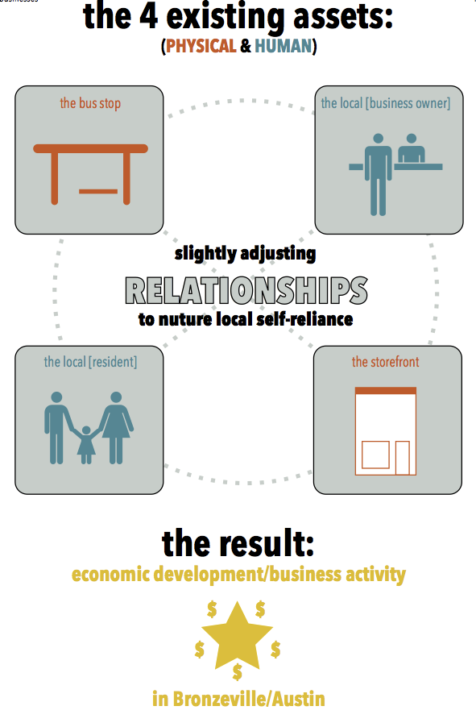
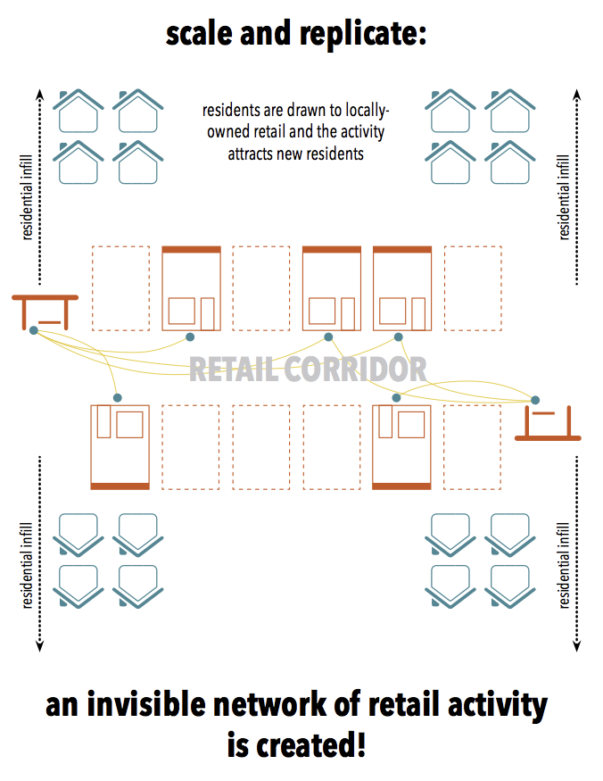

The Proposal
Installing bus trackers in storefronts within a block of a bus stop offers arrival times for peace of mind, provides another option for shelter, and allows residents to interact with neighbor-owned businesses.
Scroll down to participate as a pilot storefront!
current shelters with bus tracker displays are located at major intersections, not prioritizing residents

While some business storefronts install displays in established neighborhoods, the displays actually act as a catalyst in neglected neighborhoods.

This simple action can bring neighbor-owned business activity back to these struggling areas and drive residential infill by encouraging community-driven self-reliance.

Call for Storefronts
If you own/rent a storefront business in Chicago, in an area in need of economic and community development, be part of our simple but meaningful project. Apply here.
Evaluation Criteria:
- existing internet connection
- located on a main arterial street in Chicago
- located within 50 yards of a CTA bus stop
- storefront with visibility both inside and outside the store
- an owner who is involved and connected with the community
- allow people to browse, pro-actively chat with potential customers, understand they may not buy immediately
- an open mind - be part of fresh, evolving pilot project with goals to replicate to other areas
What You Get:
- a free display screen or laptop (donated condition)
- posters/signs directing bus riders to your store
Steps:
- schedule meeting with owner to discuss details and evaluate storefront
- choose 3 potential storefronts
- installation: 3 hours of consultation & labor, completed within 3-weeks